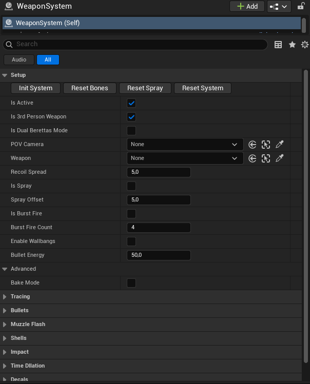
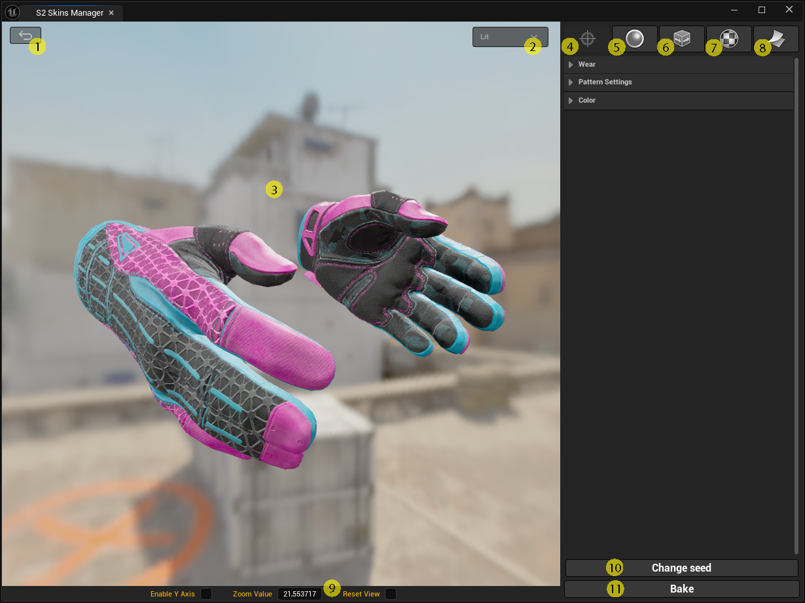
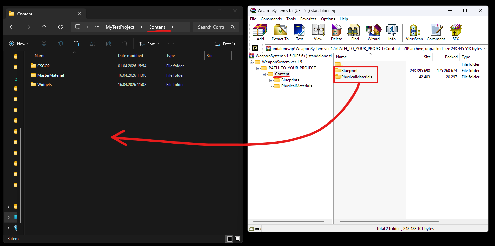
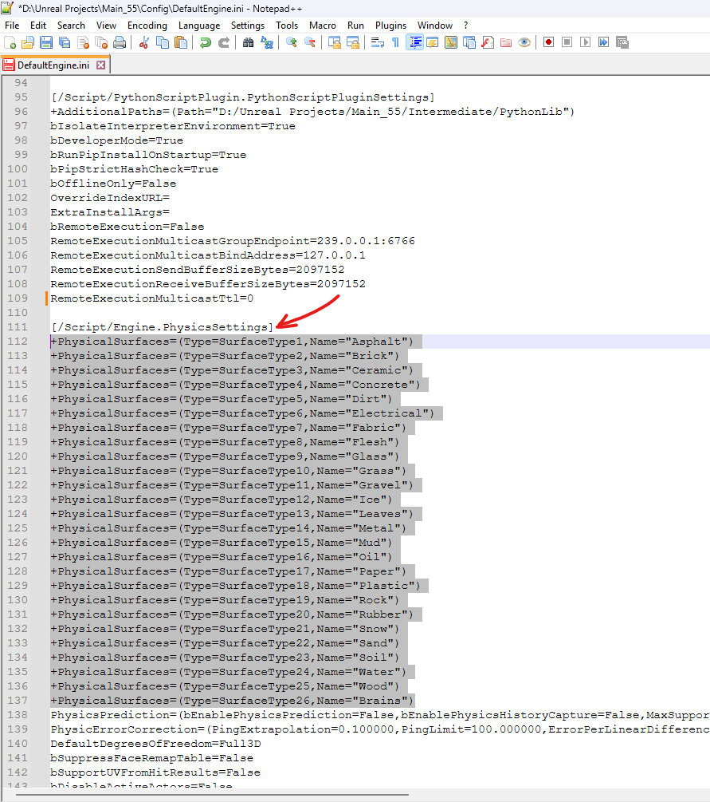
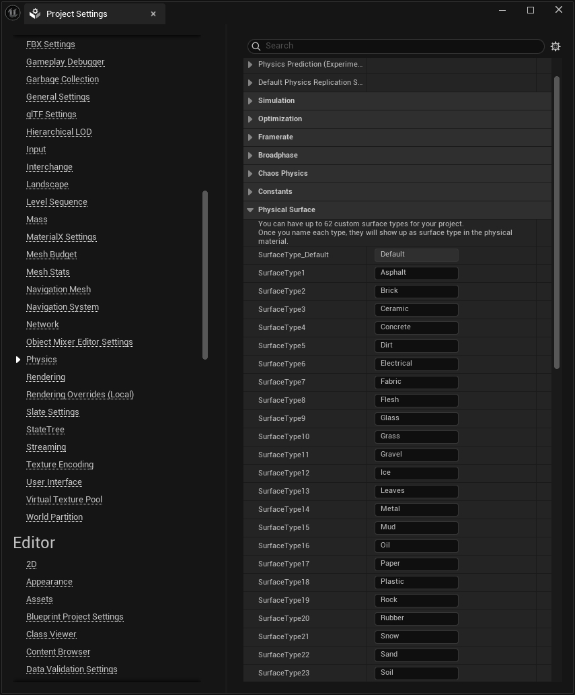
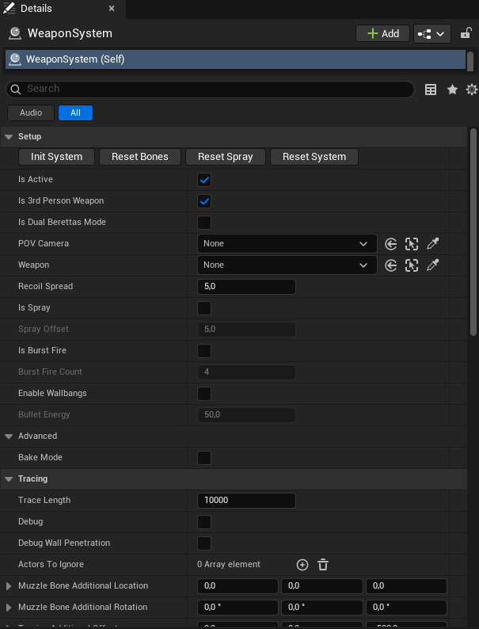

Weapon System
Полностью процедурная система оружия для кинематографических рендеров и игр. Автоматически определяет кости скелета, спавнит вспышки, гильзы, декали, импакты и звуки. Поддерживает запечку через встроенный виджет.


- Кнопка возврата (Back) — возвращает пользователя к списку скинов.
- Падающее меню — переключатель режима отображения (Lit, Roughness, Metallic и др.).
- Окно предпросмотра — реалтайм-отображение материала и всех изменений. Поддержка вращения, зума и смены угла обзора
- Основные настройки материала
- Параметры отображения материала — настройка Roughness / Metalness
- Настройка UV паттернов и потертостей
- Текстуры.
- Запекание материала.
- Панель управления камерой.
- Change Seed — генерация случайного UV для паттерна.
- Bake — сохранение финального Material Instance для дальнейшего использования.
- Кнопка возврата (Back) — возвращает пользователя к списку скинов.
- Падающее меню — переключатель режима отображения (Lit, Roughness, Metallic и др.).
- Окно предпросмотра — реалтайм-отображение материала и всех изменений. Поддержка вращения, зума и смены угла обзора
- Основные настройки материала
- Параметры отображения материала — настройка Roughness / Metalness
- Настройка UV паттернов и потертостей
- Текстуры.
- Запекание материала.
- Панель управления камерой.
- Change Seed — генерация случайного UV для паттерна.
- Bake — сохранение финального Material Instance для дальнейшего использования.
- Процедурный спавн всех эффектов с возможностью запечки в Level Sequence
- Автоматическое определение нужных костей скелета оружия
- Поддержка двух режимов камеры: POV (от первого лица) и 3rd person
- Система рикошетов с частицами и звуком
- Система очередей (Burst fire) — полезно для дробовиков и Glock
- Трассеры пуль с настройкой цвета, ширины, масштаба и времени жизни
- Физически корректные пули — поддержка симуляции физики
- Импакты и декали на месте попадания с привязкой к физическому материалу (кровь, металл, бетон, дерево, грязь и др.)
- Брызги крови позади персонажей (декали CS2 включены в пакет)
- Звуки оружия, импактов и гильз с поддержкой реверберации в MRQ рендере
- Поддержка двух вариантов частиц: Cascade и Niagara
- Дуальный режим (Dual Berettas) — чередование вспышек и гильз между двумя костями
- Встроенный Editor Utility Widget для анализа и запечки
- Unreal Engine 5.6 или новее
- PyToolkit plugin (версии 1.8 и выше)

(C:\Program Files\Epic Games\UE_5.6\Engine\Plugins).
Запустите Unreal Engine и включите следующие плагины (в меню Edit > Plugins):
- Editor Scripting Utilities
- Python Editor Script Plugin
- Python Foundation Packages
- Http Blueprint
- PyToolkit

- готовый проект с уже настроенной WeaponSystem (рекомендуется для ознакомления с использованием блюпринта)
- отдельный блюпринт для интеграции в существующий проект.
Ниже приведена инструкция по установке отдельного блюпринта.
- Откройте архив с блюпринтом (например, через WinRAR или 7-Zip).
- Внутри архива перейдите по пути:
PATH_TO_YOUR_PROJECT/Content - Скопируйте папки:
- Blueprints
- PhysicalMaterials
-
Вставьте их в папку Content вашего проекта:
MyProject/Content - Если появится запрос на замену файлов — нажмите «Да / Заменить».
⚠️ Важно: вставляйте папки именно внутрь Content, как показано на изображении.


- Откройте файл
DefaultEngine.ini, который находится в папке: MyProject/Config. В архиве также уже есть готовый файлDefaultEngine.ini. Вы можете:- либо заменить ваш файл на тот, что из архива;
- либо добавить строки вручную.
[/Script/Engine.PhysicsSettings]:+PhysicalSurfaces=(Type=SurfaceType1,Name="Asphalt") +PhysicalSurfaces=(Type=SurfaceType2,Name="Brick") +PhysicalSurfaces=(Type=SurfaceType3,Name="Ceramic") +PhysicalSurfaces=(Type=SurfaceType4,Name="Concrete") +PhysicalSurfaces=(Type=SurfaceType5,Name="Dirt") +PhysicalSurfaces=(Type=SurfaceType6,Name="Electrical") +PhysicalSurfaces=(Type=SurfaceType7,Name="Fabric") +PhysicalSurfaces=(Type=SurfaceType8,Name="Flesh") +PhysicalSurfaces=(Type=SurfaceType9,Name="Glass") +PhysicalSurfaces=(Type=SurfaceType10,Name="Grass") +PhysicalSurfaces=(Type=SurfaceType11,Name="Gravel") +PhysicalSurfaces=(Type=SurfaceType12,Name="Ice") +PhysicalSurfaces=(Type=SurfaceType13,Name="Leaves") +PhysicalSurfaces=(Type=SurfaceType14,Name="Metal") +PhysicalSurfaces=(Type=SurfaceType15,Name="Mud") +PhysicalSurfaces=(Type=SurfaceType16,Name="Oil") +PhysicalSurfaces=(Type=SurfaceType17,Name="Paper") +PhysicalSurfaces=(Type=SurfaceType18,Name="Plastic") +PhysicalSurfaces=(Type=SurfaceType19,Name="Rock") +PhysicalSurfaces=(Type=SurfaceType20,Name="Rubber") +PhysicalSurfaces=(Type=SurfaceType21,Name="Snow") +PhysicalSurfaces=(Type=SurfaceType22,Name="Sand") +PhysicalSurfaces=(Type=SurfaceType23,Name="Soil") +PhysicalSurfaces=(Type=SurfaceType24,Name="Water") +PhysicalSurfaces=(Type=SurfaceType25,Name="Wood") +PhysicalSurfaces=(Type=SurfaceType26,Name="Brains") - Запустите проект.
- Убедитесь, что все физические поверхности корректно применились.
Для этого откройте Project Settings → Physics → Physical Surface и проверьте, что все типы поверхностей (Asphalt, Concrete, Metal и т.д.) присутствуют в списке, как показано на изображении выше.
Если список пуст или отображается только
Default, значит настройки не применились — в этом случае проверьте правильность редактирования файлаDefaultEngine.ini;- убедитесь, что строки добавлены в раздел
[/Script/Engine.PhysicsSettings]; - перезапустите Unreal Engine.
- убедитесь, что строки добавлены в раздел
- Включите плагин PyToolkit
- В Content Browser блюпринты будут находиться в папке:
Content/Blueprints

Setup
- Init System — Тестовая кнопка. Производит один тестовый выстрел, вызывая все системы спавна (вспышка, гильза, импакт, звук, декали). В финальном сетапе не используется — выстрелы запускаются через события в Sequencer.
- Reset Bones — Повторно сканирует и определяет нужные кости/сокеты на скелете оружия. Перебирает все имена костей на меше. Используется если оружие было заменено или изменено.
- Reset Spray — Сбрасывает счётчик выпущенных пуль. Сбрасывает прогрессию паттерна спрея к начальному состоянию.
- Reset System — Очищает всю карту от декалей.
- Bake Mode — Переключает логику спавна эффектов между runtime-режимом и режимом запечки. Когда включён — декали, импакты и звуки идут по пути запечки в Level Sequence, а не создаются динамически. Не включать вручную — управляется через EUW.
- Is Active — Мастер-переключатель. Если выключен — вся логика стрельбы и эффектов отключается.
- Is 3rd Person Weapon — Режим оружия от третьего лица. Если включён, смещения и сокеты берутся напрямую с актора оружия. Если выключен — используется POV камера.
- Is Dual Berettas Mode — Дуальный режим (два оружия). Вспышки и гильзы чередуются между двумя костями.
- POV Camera — Камера для трассировки от первого лица.
- Weapon — Актор оружия (SkeletalMeshActor). Источник сокетов и эффектов.
- Recoil Spread — Дополнительный разброс от отдачи. Чем выше значение — тем сильнее разброс.
- Is Spray — Включает логику паттерна спрея/разброса.
- Spray Offset (активен при Is Spray) — Текущая интенсивность спрея: смещает конечную точку трассировки. Чем выше значение — тем сильнее отклонение.
- Is Burst Fire — Режим очереди. Полезен для дробовиков и оружия с несколькими выстрелами за нажатие.
- Burst Fire Count (активен при Is Burst Fire) — Количество выстрелов в очереди.
- Enable Wallbangs — Включить пробитие стен.
- Bullet Energy (активен при Enable Wallbangs) — Начальная энергия пули. Определяет, сколько преград может пробить пуля.
Tracing
- Trace Length — Дистанция трассировки (диапазон), используется для вычисления конечной точки луча.
- Debug — Включает отладочную визуализацию трассировки.
- Debug Wall Penetration — Включает отладочную трассировку специально для логики пробития стен.
- Actors To Ignore — Акторы, которые трассировка игнорирует (сам актор оружия, персонаж и т.д.).
- Muzzle Bone Additional Location — Дополнительное смещение позиции кости дула по X/Y/Z. Используется для тонкой подстройки точки вылета пули.
- Muzzle Bone Additional Rotation — Дополнительный поворот кости дула. Позволяет скорректировать направление выстрела.
- Tracing Additional Offset — Дополнительное смещение начальной точки трассировки.
Bullets
- Bullets Enable — Включает спавн физических пуль и трассеров. Пули видны только в режиме симуляции/плея.
- Tracers Every Shot — Принудительно показывает трассер при каждом выстреле. Если выключено — трассеры появляются случайно/периодически.
- Bullet Mesh — Меш пули (StaticMesh).
- Bullet Scale — Масштаб пули.
Muzzle Flash
- Muzzle Flash Enable — Включает спавн эффектов вспышки дула при выстреле.
- Muzzle Flash Bone — Кость (или сокет), из которой спавнится вспышка (основная).
- Muzzle Flash Bone 2 — Необязательный второй сокет для дуального режима. Если не задан — вспышка спавнится только из основной кости. Можно оставить пустым.
- Muzzle Flash — Система частиц вспышки дула.
- Muzzle Flash Rotation — Дополнительное смещение поворота вспышки.
- Muzzle Flash Offset — Дополнительное смещение позиции вспышки.
- Muzzle Flash Scale — Масштаб вспышки.
Shells
- Shells Enable — Включает спавн гильз. Гильзы видны только в режиме симуляции/плея.
- Shell Bone — Имя кости, из которой выбрасывается гильза (основной).
- Shell Bone 2 — Необязательная вторая кость для дуального режима. Если не задана — выброс идёт только из основной кости. Можно оставить пустым.
- Shell Speed Min / Shell Speed Max — Диапазон начальной скорости гильзы. Реальная скорость выбирается случайно в этом диапазоне.
- Shells Offset — Смещение точки спавна гильзы относительно кости.
- Shell Mesh — Меш гильзы (StaticMesh).
- Shells Rotation — Дополнительное смещение поворота меша гильзы.
- Shells Mass — Масса гильзы в граммах. Влияет на физику падения.
- Shells Scale — Масштаб гильзы.
Impact
- Impacts Enable — Включает спавн эффектов попадания в точке, куда попала пуля. Система автоматически определяет тип поверхности по физическому материалу и выбирает соответствующие частицы: искры на металле, облако пыли на бетоне, брызги крови на персонаже и т.д. При выключенном параметре никаких визуальных эффектов попадания не спавнится.
- Default Impact — Система частиц, когда для поверхности не найден соответствующий физический материал.
- Impacts Scale — Масштаб для всех частиц импакта (искры, облака пыли и т.д.).
Time Dilation
- Muzzle Flash Time Dilation — Замедление/ускорение эффектов вспышки дула.
- Impact Time Dilation — Замедление/ускорение эффектов импакта.
- Sound Time Dilation (Pitch) — Изменяет питч звуков в зависимости от time dilation.
- TR Time Dilation Multiplier — Глобальный time dilation из ассета TimeRemapping. Передаётся снаружи (например, из Sequencer) и влияет на скорость воспроизведения всех эффектов системы.
Decals
- Decals Enable — Включить спавн декалей на поверхностях.
- Decal — Материал декали для обычных поверхностей, когда для у них не найден соответствующий физический материал.
- Blood Decals Enable — Включает спавн декалей крови на стенах позади персонажей при попадании.
- Blood Max Distance — Максимальное расстояние между телом и стеной, при котором допускается спавн декаль крови.
Sound
- Weapon Sound Enable — Включить звук выстрела.
- Impact Sound Enable — Включить звуки попадания (привязаны к физическому материалу поверхности).
- Shells Sound Enable — Включить звуки гильз.
- Weapon Sounds — Звуки выстрела. Из списка выбирается случайный.
- Volume — Настройки громкости для каждого типа звука.

- Weapon Systems — Список акторов WeaponSystem, которые нужно запечь.
Кнопки
- Analyze — Анализирует все кадры секвенсера и собирает данные о частицах, декалях и звуках. Показывает статистику: количество частиц, декалей и звуков по кадрам.
- Bake — Запекает собранные данные в Level Sequence.
- Load Active Sequence — Загружает данные из открытого секвенсера и ищет там все WeaponSystem акторы.
- Reset — Сбрасывает данные виджета в начальное состояние.